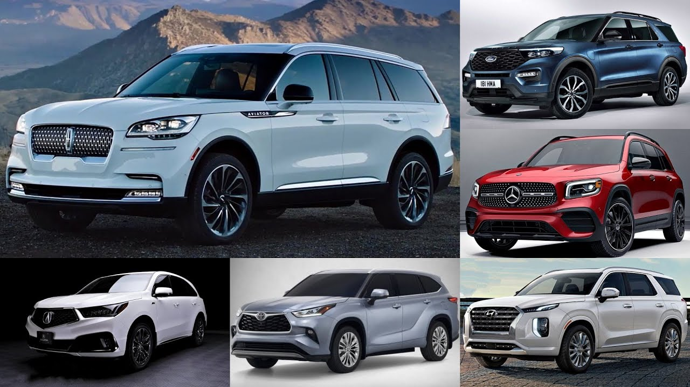
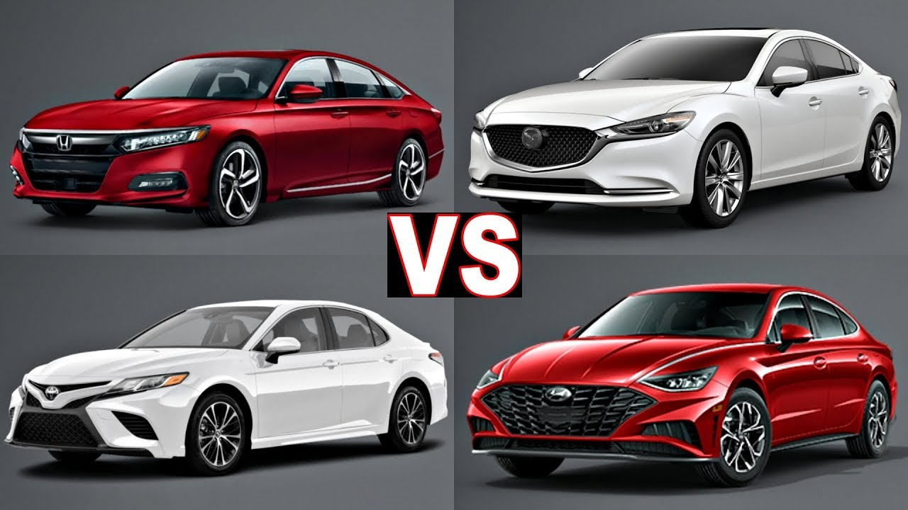
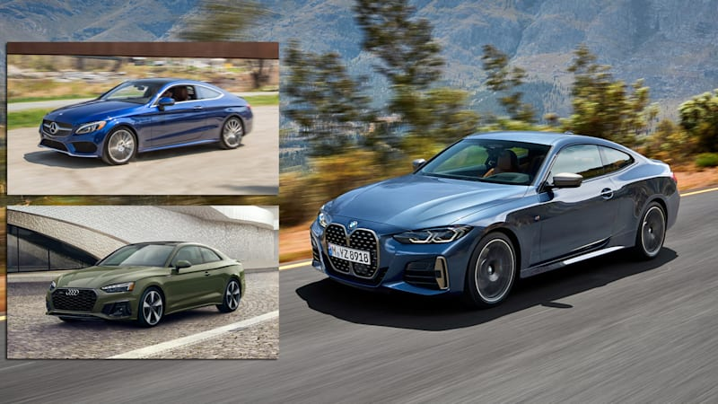

Often also referred to as crossovers, tend to be taller and boxier than sedans, offer an elevated seating position, and have more ground clearance than a car. They include a station wagon-like cargo area that is accessed through a flip-up rear hatch door, and many offer all-wheel drive. The larger ones have three rows of seats.
Sizes start at subcompact (Hyundai Kona, Nissan Kicks), mid-size, and go all the way to full-size (Ford Expedition, Chevrolet Tahoe). Luxury brands offer many SUV models in most of the same size categories.
Due to the high demand for SUVs in the market, luxury and sports vehicle brands started their presence in this category.
SUV advantages:
- Due to the high demand for SUVs in the market, luxury and sports vehicle brands started their presence in this category.
- Big trunk. In the SUVs it is easy to carry large loads that do not fit into the other cars.
- Resistance to bad weather. SUVs are not afraid of snow, frost, wind, or heat.
- Status. They can be used for business meetings and travel.
A sedan has four doors and a traditional trunk. Like vehicles in many categories, they're available in a range of sizes from small (subcompact vehicles like Nissan Versa and Kia Rio) to compacts (Honda Civic, Toyota Corolla) to mid-size (Honda Accord, Nissan Altima), and full-size (Toyota Avalon, Dodge Charger). Luxury brands like Mercedes-Benz and Lexus have sedans in similar sizes as well.
Sedans also have it better in terms of acceleration, braking, speed and fuel economy. Lower weight means better acceleration and stopping; with less mass to move, it's easier to move it.
A coupe has historically been considered a two-door car with a trunk and a solid roof. This would include cars like a Ford Mustang or Audi A5, or even two-seat sports cars like the Chevrolet Corvette and Porsche Boxster. Recently, however, car companies have started to apply the word "coupe" to four-door cars or crossovers with low, sleek rooflines that they deem "coupe-like." This includes vehicles as disparate as a Mercedes-Benz CLS sedan and BMW X6 SUV. At Car and Driver, we still consider a coupe to be a two-door car.
These are the sportiest, hottest, coolest-looking coupes and convertibles—low to the ground, sleek, and often expensive. They generally are two-seaters, but sometimes have small rear seats as well. Cars like the Porsche 911 and Mazda Miata are typical sports cars, but you can stretch the definition to include muscle cars like the Ford Mustang and Dodge Challenger. Then there are the high-end exotic dream cars with sky-high price tags for the one percent, cars like the Ferrari 488 GTB and Aston Martin Vantage, which stop traffic with their spaceship looks.
Wagons are similar to sedans but have an extended roofline and a hatch door at the rear instead of a trunk. Some, like the Subaru Outback or Audi A4 Allroad, have elevated ground clearance and some rugged body cladding to make them more like a sport-utility vehicle (SUV), but they are nonetheless closely related to sedans. Wagons have fallen from favor during the past few decades and there are relatively few available for sale in the United States.
Traditionally, the term "hatchback" has meant a compact or subcompact sedan with a squared-off roof and a rear flip-up hatch door that provides access to the vehicle's cargo area instead of a conventional trunk. The Volkswagen Golf and Kia Rio are two typical hatchbacks. More recently, rear hatches have found their way on to some larger cars, like the Audi A7 and Kia Stinger. They look like sedans, but they actually have a steeply raked hatchback that affords easier accessibility to the cargo area and greater carrying capacity than a traditional trunk would.
Does the roof retract into the body leaving the passenger cabin open to the elements? If so, it's a convertible. Most convertibles have a fully powered fabric roof that folds down, but a few have to be lowered by hand. There are also a number of models with a retractable hardtop, as well as several unusual quasi-convertibles (called "targa tops") like the Mazda MX-5 Miata RF, Porsche 911 Targa and Corvette; only the forward section of their roofs retracts or can be removed by hand.
A pickup truck has a passenger cab and an open cargo bed in the rear. Virtually all pickups offer some form of all-wheel drive or part-time four-wheel drive—the latter for off-road use only. With one exception—the mid-sized Honda Ridgeline—pickup bodies are cabs mounted to a separate steel frame. The Ridgeline is more like a crossover with the rear section of the roof lopped off to expose a cargo bed. Currently, pickup trucks come in two size categories: full-size and mid-size.